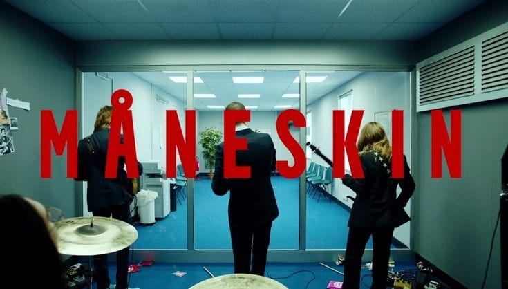

 |
¿QUIENEA SON?
Maneakin es una banda italiana formada en 2016 en Roma ,confomada po Damiano David como vocalista ,victoria de angelis como bajista, Thomas Raggi como guitarrista y Ethan Tochiocomo baterista. En sus inicios, la banda tocaba canciones de otros artistas en las calles de Roma, pero comenzó a grabar temas originales cuando empezó a participar en varios concursos para bandas emergentes. El nombre "Måneskin" significa "luz de luna" en danés, gracias a la herencia cultural de Victoria De Angelis, La banda se dio a conocer en 2017 participando en el X Factor Italia y ganó popularidad internacional después de vencer en el Festival de Eurovisión 2021 con su canción "Zitti e buoni".
DATOS GENERALES
| Origen | Roma,italia |
|---|---|
Estado |
Inactivo |
Genero |
Pop rock,glam rock, hard rock, post punk, gothic rock |
Periodo de actividad |
2015-2024(Pausado) |
Discografia |
Sony Music y RCA Records |
Escucha ya!! |
|
Miembros |
creador: Valencia Verdugo
grupo:4J
Materia: submodulo 1